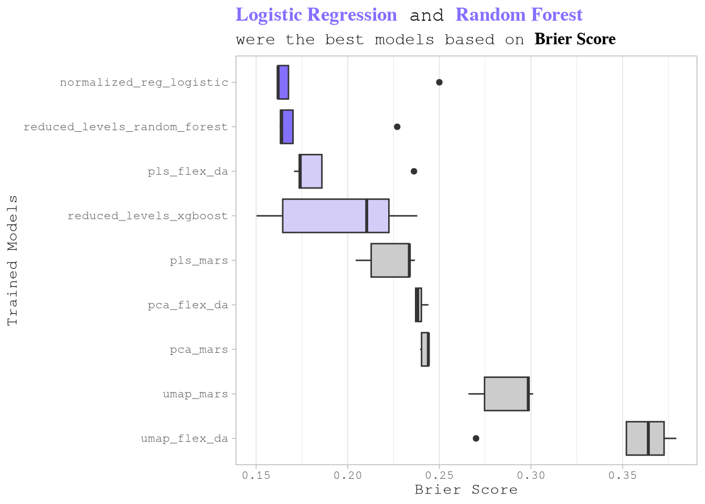
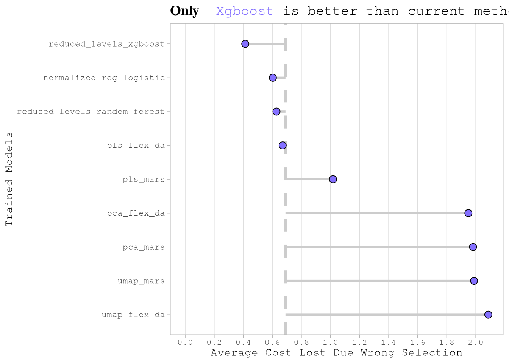
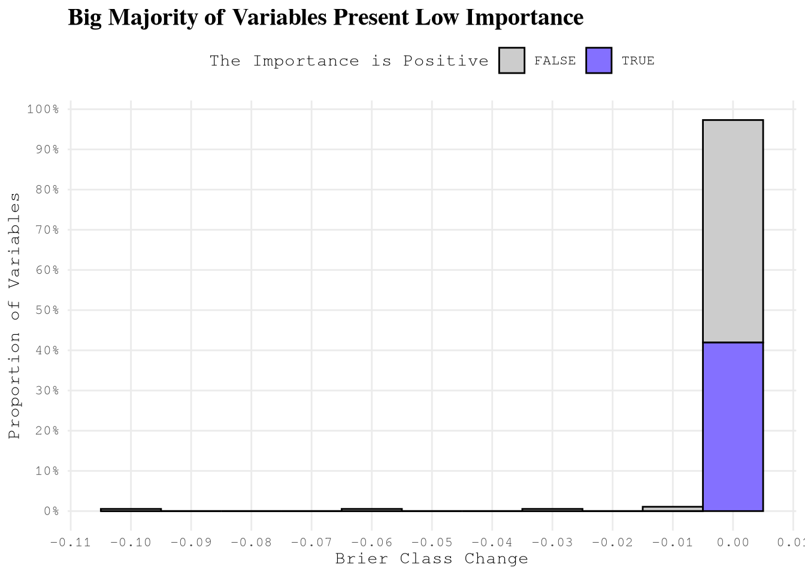
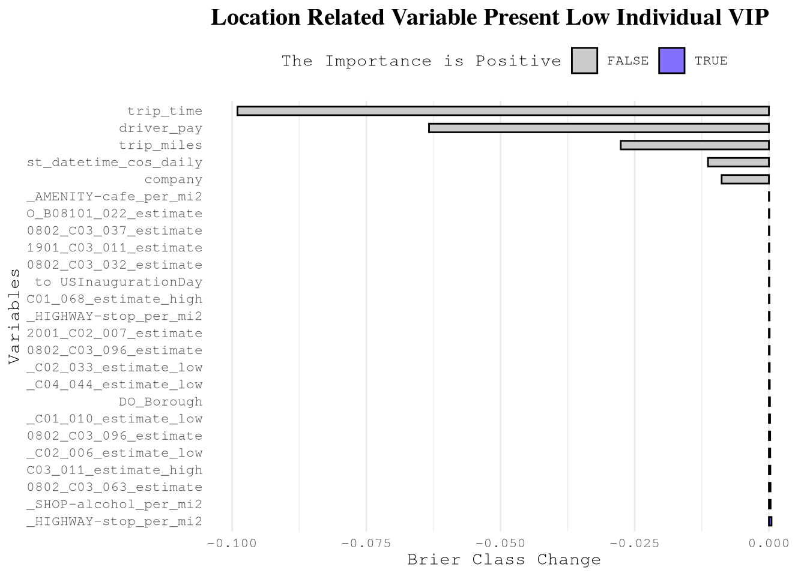
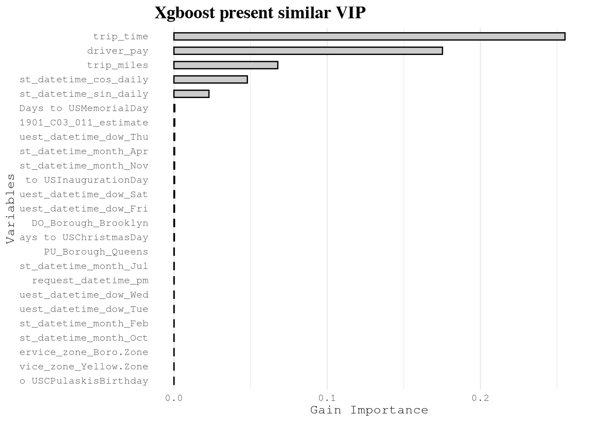
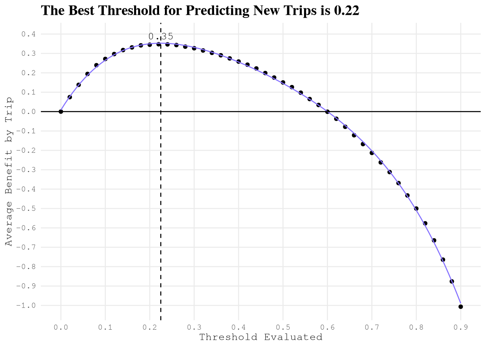

## To manage relative paths
library(here)
## To transform data that fits in RAM
library(lubridate)
library(timeDate)
library(ggtext)
## Tools for modeling
library(tidymodels)
library(embed)
library(themis)
library(discrim)
library(DALEX)
## For table formatting
library(gt)
## Publish data sets, models, and other R objects
library(pins)
## Custom functions
devtools::load_all()
# Defining the pin boards to use
BoardLocal <- board_folder(here("../NycTaxiPins/Board"))
# Loading params
Params <- yaml::read_yaml(here("params.yml"))
Params$BoroughColors <- unlist(Params$BoroughColors)Training and Selecting Model To Implement
A Profit-Driven Machine Learning Pipeline for Taxi Trip Acceptance
After extensive data exploration and feature engineering, we developed a classification model to predict whether drivers should accept incoming trip requests based on expected profitability.
The goal is to maximize driver earnings by helping them identify the most valuable trips while minimizing time spent on low-value assignments. This optimization problem directly impacts driver income and operational efficiency across the NYC taxi network.
Key Takeaways
- Logistic regression and random forest achieved the lowest Brier scores, but only XGBoost translated into meaningful cost savings when evaluated against a profit‑based metric.
- Bayesian optimization reduced XGBoost’s Brier score by ~4% and improved consistency.
- Location IDs (pickup/dropoff zones) show low individual importance, yet they collectively contribute crucial information through interactions with other features.
- Dimensionality reduction via PLS did not improve performance, likely because it compressed the interaction signals that tree‑based models rely on.
- Threshold optimization is essential for economic benefit – The optimal decision threshold of 0.22 (well below the default 0.5) reflects asymmetric misclassification costs and increases average per‑trip earnings by over 50% compared to accepting all trips.
- Final model generalizes with stable economic impact – On the held‑out test set, the XGBoost model achieved a Brier score of 0.146 (matching cross‑validation) and delivered $0.35 net benefit per trip, confirming robustness and real‑world viability.
- Statistical accuracy alone is insufficient – Models must be evaluated with business‑aligned metrics; the final XGBoost workflow successfully bridges predictive performance and operational profitability.
Phase 1: Model Selection & Initial Training
1.1 Problem Context & Algorithm Selection
To solve this binary classification problem (accept trip: yes/no), we evaluated a diverse range of machine learning algorithms. Our selection strategy balances interpretability, performance, and computational efficiency:
- Simple, Interpretable Models:
- Regularized Logistic Regression via
glmnet - Flexible Discriminant Analysis (FDA)
- Regularized Logistic Regression via
- Non-linear, Moderate Complexity Models:
- MARS (Multivariate Adaptive Regression Splines) via
earth - Bagged Trees via
rpart
- MARS (Multivariate Adaptive Regression Splines) via
- Advanced Ensemble Models:
- Random Forests via
ranger - Gradient Boosted Trees via
xgboost
- Random Forests via
This progression from simple to complex allows us to identify the optimal balance between model performance and computational requirements for production deployment.
Training Strategy: We employ 5-fold cross-validation with 5 random hyperparameter configurations per model to ensure robust performance estimates while managing computational costs.
1.2 Environment Setup
1.3 Model Specification
Each model is configured with hyperparameters marked for tuning. The tuning process will identify optimal values within predefined search spaces.
# Regularized logistic regression
GlmnetSpec <-
logistic_reg(penalty = tune(), mixture = tune()) |>
set_mode("classification") |>
set_engine("glmnet")
# Flexible discriminant analysis
FdaSpec <-
discrim_flexible(prod_degree = tune()) |>
set_mode("classification") |>
set_engine('earth')
# MARS
EarthSpec <-
mars(num_terms = tune(), prod_degree = tune()) |>
set_mode("classification")
# Random forests
RangerSpec <-
rand_forest(mtry = tune(), min_n = tune(), trees = 250) |>
set_mode("classification") |>
set_engine("ranger")
# Boosted trees
XgboostSpec <-
boost_tree(
trees = 250,
tree_depth = tune(),
learn_rate = tune(),
mtry = tune(),
min_n = tune(),
loss_reduction = tune(),
sample_size = tune()
) |>
set_mode("classification") |>
set_engine("xgboost")1.4 Data Loading & Preparation
We load pre-processed datasets from our local pin board. These datasets include trip-level features, geographic zone characteristics, demographic variables from the American Community Survey (ACS), and spatial density metrics.
AcsVariablesByZoneId <-
pin_read(BoardLocal, "AcsVariablesByZoneId")[,
LocationID := as.character(LocationID)
]
OmsDensityFeatures <- pin_read(BoardLocal, "OmsDensityFeatures")[,
LocationID := as.character(LocationID)
]
ZoneCodesRef <- pin_read(BoardLocal, "ZoneCodesRef")[, c(
"LocationID",
"Borough",
"service_zone"
)]
SampledData <-
pin_list(BoardLocal) |>
grep(pattern = "^OneMonthData", value = TRUE) |>
sort() |>
head(12L) |>
lapply(FUN = pin_read, board = BoardLocal) |>
rbindlist() |>
tibble::as_tibble() |>
mutate(
take_current_trip = fifelse(take_current_trip == 1L, "yes", "no") |>
factor(levels = c("yes", "no")),
PULocationID = as.character(PULocationID),
DOLocationID = as.character(DOLocationID)
)
set.seed(2545)
SampledDataSplit <- initial_split(SampledData, strata = take_current_trip)
TrainingSample <- training(SampledDataSplit)
TestingSample <- testing(SampledDataSplit)This comprehensive recipe transforms raw trip data into a rich feature set by incorporating geospatial, temporal, and contextual information. The pipeline is designed to be reproducible—new predictions require only basic trip data from the TLC Trip Record Data, as all feature engineering is embedded in the workflow.
Key Feature Categories: - Geospatial Features: Zone characteristics, demographic data, density metrics for pickup and dropoff locations - Temporal Features: Daily and weekly cyclical patterns, calendar features, holiday proximity - Trip Characteristics: Duration, distance, payment information - Company Identity: Rideshare platform (Uber, Lyft, Via, Juno)
ConsolidationRecipe <-
# Starting Recipe
recipe(
take_current_trip ~
PULocationID +
DOLocationID +
hvfhs_license_num +
trip_miles +
driver_pay +
trip_time +
request_datetime +
trip_id +
performance_per_hour +
percentile_75_performance,
data = TrainingSample
) |>
# Updating roles of variables important for trip identification
update_role(
trip_id,
performance_per_hour,
percentile_75_performance,
new_role = "additional info"
) |>
# Selecting variables over 2 min
step_filter(trip_time >= (60 * 2)) |>
# Renaming variables to join
step_rename(PU_LocationID = PULocationID, DO_LocationID = DOLocationID) |>
# Adding Geospatial Data
step_join_geospatial_features(
ends_with("LocationID"),
spatial_features = ZoneCodesRef,
col_prefix = c("DO_", "PU_")
) |>
step_join_geospatial_features(
ends_with("LocationID"),
spatial_features = AcsVariablesByZoneId,
col_prefix = c("DO_", "PU_")
) |>
step_join_geospatial_features(
ends_with("LocationID"),
spatial_features = OmsDensityFeatures,
col_prefix = c("DO_", "PU_")
) |>
# Transforming strings to factors
step_string2factor(all_string_predictors()) |>
# Daily cycle
step_harmonic(
request_datetime,
frequency = 1,
cycle_size = 3600 * 24,
keep_original_cols = TRUE
) |>
step_rename(
request_datetime_sin_daily = request_datetime_sin_1,
request_datetime_cos_daily = request_datetime_cos_1
) |>
# Weekly cycle
step_harmonic(
request_datetime,
frequency = 1,
cycle_size = 3600 * 24 * 7,
keep_original_cols = TRUE
) |>
step_rename(
request_datetime_sin_weekly = request_datetime_sin_1,
request_datetime_cos_weekly = request_datetime_cos_1
) |>
# Extracting additional information
step_date(
request_datetime,
features = c(
"year",
"week",
"decimal",
"semester",
"quarter",
"doy",
"dow",
"mday",
"month"
)
) |>
step_holiday(
request_datetime,
holidays = c(
'USChristmasDay',
'USColumbusDay',
'USCPulaskisBirthday',
'USDecorationMemorialDay',
'USElectionDay',
'USGoodFriday',
'USInaugurationDay',
'USIndependenceDay',
'USJuneteenthNationalIndependenceDay',
'USLaborDay',
'USLincolnsBirthday',
'USMemorialDay',
'USMLKingsBirthday',
'USNewYearsDay',
'USPresidentsDay',
'USThanksgivingDay',
'USVeteransDay',
'USWashingtonsBirthday'
)
) |>
step_mutate(
.pkgs = c("data.table", "lubridate", "timeDate"),
company = fcase(
hvfhs_license_num == "HV0002" ,
"Juno" ,
hvfhs_license_num == "HV0003" ,
"Uber" ,
hvfhs_license_num == "HV0004" ,
"Via" ,
hvfhs_license_num == "HV0005" ,
"Lyft" ,
default = "New"
) |>
as.factor(),
request_datetime_am = am(request_datetime) |> as.integer(),
request_datetime_pm = pm(request_datetime) |> as.integer(),
`Days to USChristmasDay` = difftime(
USChristmasDay(year(request_datetime)),
request_datetime,
units = 'days'
) |>
as.integer(),
`Days to USColumbusDay` = difftime(
USColumbusDay(year(request_datetime)),
request_datetime,
units = 'days'
) |>
as.integer(),
`Days to USCPulaskisBirthday` = difftime(
USCPulaskisBirthday(year(request_datetime)),
request_datetime,
units = 'days'
) |>
as.integer(),
`Days to USDecorationMemorialDay` = difftime(
USDecorationMemorialDay(year(request_datetime)),
request_datetime,
units = 'days'
) |>
as.integer(),
`Days to USElectionDay` = difftime(
USElectionDay(year(request_datetime)),
request_datetime,
units = 'days'
) |>
as.integer(),
`Days to USGoodFriday` = difftime(
USGoodFriday(year(request_datetime)),
request_datetime,
units = 'days'
) |>
as.integer(),
`Days to USInaugurationDay` = difftime(
USInaugurationDay(year(request_datetime)),
request_datetime,
units = 'days'
) |>
as.integer(),
`Days to USIndependenceDay` = difftime(
USIndependenceDay(year(request_datetime)),
request_datetime,
units = 'days'
) |>
as.integer(),
`Days to USJuneteenthNationalIndependenceDay` = difftime(
USJuneteenthNationalIndependenceDay(year(request_datetime)),
request_datetime,
units = 'days'
) |>
as.integer(),
`Days to USLaborDay` = difftime(
USLaborDay(year(request_datetime)),
request_datetime,
units = 'days'
) |>
as.integer(),
`Days to USLincolnsBirthday` = difftime(
USLincolnsBirthday(year(request_datetime)),
request_datetime,
units = 'days'
) |>
as.integer(),
`Days to USMemorialDay` = difftime(
USMemorialDay(year(request_datetime)),
request_datetime,
units = 'days'
) |>
as.integer(),
`Days to USMLKingsBirthday` = difftime(
USMLKingsBirthday(year(request_datetime)),
request_datetime,
units = 'days'
) |>
as.integer(),
`Days to USNewYearsDay` = difftime(
USNewYearsDay(year(request_datetime)),
request_datetime,
units = 'days'
) |>
as.integer(),
`Days to USPresidentsDay` = difftime(
USPresidentsDay(year(request_datetime)),
request_datetime,
units = 'days'
) |>
as.integer(),
`Days to USThanksgivingDay` = difftime(
USThanksgivingDay(year(request_datetime)),
request_datetime,
units = 'days'
) |>
as.integer(),
`Days to USVeteransDay` = difftime(
USVeteransDay(year(request_datetime)),
request_datetime,
units = 'days'
) |>
as.integer(),
`Days to USWashingtonsBirthday` = difftime(
USWashingtonsBirthday(year(request_datetime)),
request_datetime,
units = 'days'
) |>
as.integer()
) |>
# Removing variables
step_rm(ends_with(c(
"LocationID",
"request_datetime",
"hvfhs_license_num"
)))
TrainingSampleJoined <-
prep(ConsolidationRecipe) |>
bake(new_data = NULL)
pin_write(
BoardLocal,
ConsolidationRecipe,
"ConsolidationRecipe",
type = "qs2",
title = "Consolidation Recipe"
)
pin_write(
BoardLocal,
TrainingSampleJoined,
"TrainingSampleJoined",
type = "qs2",
title = "Training Sample Joined"
)1.5 Feature Engineering Pipeline
Because each model family has different assumptions, we created a common starting function that applies the same basic steps to any training data:
- Select
take_current_tripas the target and all other columns as predictors. - Downsample the majority class (
yes) to balance the training set. - Impute missing numeric values with the median (learned from training data).
- Retain
trip_id,performance_per_hour, andpercentile_75_performanceas non‑predictor metadata for later evaluation.
start_recipe <- function(df) {
new_recipe =
recipe(take_current_trip ~ ., data = df) |>
step_downsample(take_current_trip, under_ratio = 1) |>
step_impute_median(all_numeric_predictors()) |>
update_role(
trip_id,
performance_per_hour,
percentile_75_performance,
new_role = "additional info"
)
return(new_recipe)
}1.5.1 Normalization & Dimensionality Reduction
For models sensitive to the scale and distribution of predictors (such as Logistic Regression, FDA, and MARS), we implement a “Basic Normalized” pipeline. This involves applying a Yeo‑Johnson transformation to handle non‑normality, creating dummy variables for categorical data, and filtering out near‑zero variance (NZV) predictors.
Building upon this base, we define three distinct dimensionality reduction strategies to capture latent patterns in the taxi data:
- Principal Component Analysis (PCA): An unsupervised approach to reduce collinearity by creating orthogonal linear combinations of predictors.
- Partial Least Squares (PLS): A supervised approach that reduces dimensions while maximizing the covariance between predictors and the trip acceptance outcome.
- Uniform Manifold Approximation and Projection (UMAP): A non‑linear technique used here to capture complex, manifold‑based relationships in the high‑dimensional feature space.
BasicNormalizedRecipe <-
start_recipe(TrainingSampleJoined) |>
step_YeoJohnson(all_numeric_predictors()) |>
step_novel(all_nominal_predictors()) |>
step_dummy(all_nominal_predictors()) |>
step_nzv(all_predictors()) |>
step_normalize(all_numeric_predictors())
NormalizedPcaRecipe <-
BasicNormalizedRecipe |>
step_pca(all_numeric_predictors(), num_comp = tune()) |>
step_normalize(all_numeric_predictors())
NormalizedPlsRecipe <-
BasicNormalizedRecipe |>
step_pls(
all_numeric_predictors(),
outcome = "take_current_trip",
num_comp = tune()
) |>
step_normalize(all_numeric_predictors())
NormalizedUmapRecipe <-
BasicNormalizedRecipe |>
step_umap(
all_numeric_predictors(),
outcome = "take_current_trip",
neighbors = tune(),
num_comp = tune()
) |>
step_normalize(all_numeric_predictors())1.5.2 Sparsity Management
Tree‑based models like Random Forest and XGBoost are generally robust to monotonic transformations but can struggle with high‑cardinality categorical variables (e.g., the 263 NYC taxi zones). To address this, we define a “Reduced Levels” recipe that uses step_other() to collapse infrequent categories into an “other” bucket, followed by one‑hot encoding to allow the ensemble models to partition the data effectively.
ReducedLevelsRecipe <-
start_recipe(TrainingSampleJoined) |>
step_novel(all_nominal_predictors()) |>
step_other(all_nominal_predictors(), threshold = tune()) |>
step_dummy(all_nominal_predictors(), one_hot = TRUE) |>
step_nzv(all_predictors())1.6 Model Training Workflows
With all recipes and model specifications defined, we now assemble them into unified training workflows using workflow_set(). Each workflow pairs a preprocessing recipe with one or more model specifications, allowing tidymodels to jointly tune and evaluate every recipe–model combination in a systematic way.
The workflows are organized into three groups based on their computational profiles and the assumptions of the underlying models:
WorkFlowSimplepairs theBasicNormalizedRecipewith regularized logistic regression. This group is lightweight in memory and serves as our interpretable baseline, establishing a performance floor against which more complex models are compared.WorkFlowDimReductioncombines the three dimensionality‑reduction recipes (PCA, PLS, and UMAP) with FDA and MARS. These combinations are memory‑intensive due to the additional transformation steps, but allow the non‑linear models to operate on a compressed, lower‑dimensional representation of the feature space.WorkFlowTreespairs theReducedLevelsRecipewith Random Forest and XGBoost. Since tree‑based models are scale‑invariant but sensitive to high‑cardinality categoricals, this workflow applies the sparse category collapsing strategy defined in section 1.5.2.
Each workflow set is serialized and saved to the local pin board for downstream hyperparameter tuning and model selection. This modular structure makes it straightforward to add new recipe–model combinations or rerun individual groups without retraining the entire pipeline.
# Group 1: Simple linear models (light on memory)
WorkFlowSimple <- workflow_set(
preproc = list(
normalized = BasicNormalizedRecipe
),
models = list(
reg_logistic = GlmnetSpec
)
)
# Group 2: Dimensionality reduction models (memory intensive)
WorkFlowDimReduction <- workflow_set(
preproc = list(
pca = NormalizedPcaRecipe,
pls = NormalizedPlsRecipe,
umap = NormalizedUmapRecipe
),
models = list(
flex_da = FdaSpec,
mars = EarthSpec
)
)
# Group 3: Tree-based models
WorkFlowTrees <- workflow_set(
preproc = list(
reduced_levels = ReducedLevelsRecipe
),
models = list(
random_forest = RangerSpec,
xgboost = XgboostSpec
)
)
pin_write(
BoardLocal,
WorkFlowSimple,
"WorkFlowSimple",
type = "qs2",
title = "Work Flow Simple"
)
pin_write(
BoardLocal,
WorkFlowDimReduction,
"WorkFlowDimReduction",
type = "qs2",
title = "Work Flow Dim Reduction"
)
pin_write(
BoardLocal,
WorkFlowTrees,
"WorkFlowTrees",
type = "qs2",
title = "Work Flow Trees"
)1.7 Tuning Workflows
With the three workflow groups saved to disk, we now run hyperparameter tuning for each group in separate scripts. Running them separately keeps memory usage manageable, since some combinations — particularly those involving dimensionality reduction — are considerably more expensive to train than others.
Each script follows the same overall pattern:
- Load the saved workflow from the pin board.
- Define a 5‑fold cross‑validation scheme on the joined training data.
- Generate a small space‑filling grid of 5 hyperparameter configurations using the Audze‑Eglais design.
- Evaluate every configuration across all folds using both ROC‑AUC and Brier Score as metrics.
Once tuning is complete, the results are saved back to the pin board so section 1.8 can load and compare them together.
# Importing ----
## Libraries -----
library(tidymodels)
library(themis)
library(future)
## Removing limit for parallel processing ----
options(future.globals.maxSize = 16.5 * 1e9)
## Pin boards to use ----
BoardLocal <- pins::board_folder(here::here("../NycTaxiPins/Board"))
## Resample to use -----
TrainingSampleJoined <- pins::pin_read(BoardLocal, "TrainingSampleJoined")
set.seed(5878)
TrainingSampleJoinedResamples <- vfold_cv(TrainingSampleJoined, v = 5)
## Metrics to eval -----
MetricsToEval <- metric_set(roc_auc, brier_class)
## Workflow to eval ----
WorkFlowSimple <-
pins::pin_read(BoardLocal, "WorkFlowSimple") |>
extract_workflow(id = "normalized_reg_logistic")
## Grid to eval ----
WfParams <- extract_parameter_set_dials(WorkFlowSimple)
set.seed(14005)
initial_grid <- grid_space_filling(
WfParams,
size = 5,
type = "audze_eglais",
original = FALSE
)
print("Tuning normalized_reg_logistic with grid:")
print(initial_grid)
plan(multicore, workers = 5)
WorkFlowSimpleTuned <- tune_grid(
object = WorkFlowSimple,
resamples = TrainingSampleJoinedResamples,
param_info = WfParams,
grid = initial_grid,
metrics = MetricsToEval,
control = control_grid(
verbose = TRUE,
parallel_over = "resamples",
save_pred = TRUE
)
)
plan(sequential)
print("Completed normalized_reg_logistic")
# Save all results together
pins::pin_write(
BoardLocal,
list(normalized_reg_logistic = WorkFlowSimpleTuned),
"WorkFlowSimpleTuned",
type = "qs2",
title = "Work Flow Simple Tuned"
)
print("All simple models completed!")# Importing ----
## Libraries -----
library(tidymodels)
library(embed)
library(themis)
library(discrim)
library(baguette)
library(future)
## Removing limit for parallel processing ----
options(future.globals.maxSize = 16.5 * 1e9)
## Pin boards to use ----
BoardLocal <- pins::board_folder(here::here("../NycTaxiPins/Board"))
## Resample to use -----
TrainingSampleJoined <- pins::pin_read(BoardLocal, "TrainingSampleJoined")
set.seed(5878)
TrainingSampleJoinedResamples <- vfold_cv(TrainingSampleJoined, v = 5)
## Metrics to eval -----
MetricsToEval <- metric_set(roc_auc, brier_class)
## Workflow to eval ----
WorkFlowDimReduction <- pins::pin_read(BoardLocal, "WorkFlowDimReduction")
# Tunning and saving ----
results_list <- list()
for (wf_id_i in WorkFlowDimReduction$wflow_id) {
wf_i <- extract_workflow(WorkFlowDimReduction, id = wf_id_i)
wf_param_i <- extract_parameter_set_dials(wf_i)
# Ajustar rangos para reducción de dimensionalidad
if (grepl("^(pca|pls|umap)_", wf_id_i)) {
wf_param_i <- update(
wf_param_i,
num_comp = num_comp(range = c(2L, 25L)) # Reducido de 50 a 25
)
}
set.seed(14005)
initial_grid <- grid_space_filling(
wf_param_i,
size = 5,
type = "audze_eglais",
original = FALSE
)
print(paste("Tuning", wf_id_i, "with grid:"))
print(initial_grid)
# Usar menos workers para estos modelos más pesados
plan(multicore, workers = 2)
results_list[[wf_id_i]] <- tune_grid(
object = wf_i,
resamples = TrainingSampleJoinedResamples,
param_info = wf_param_i,
grid = initial_grid,
metrics = MetricsToEval,
control = control_grid(
verbose = TRUE,
parallel_over = "resamples",
save_pred = TRUE
)
)
plan(sequential)
print(paste("Completed", wf_id_i))
# Liberar memoria después de cada modelo
gc()
}
# Save all results together
pins::pin_write(
BoardLocal,
results_list,
"WorkFlowDimReductionTuned",
type = "qs2",
title = "Work Flow Dim Reduction Tuned"
)
print("All dimensionality reduction models completed!")# Importing ----
## Libraries -----
library(tidymodels)
library(themis)
library(baguette)
## Pin boards to use ----
BoardLocal <- pins::board_folder(here::here("../NycTaxiPins/Board"))
## Resample to use -----
TrainingSampleJoined <- pins::pin_read(BoardLocal, "TrainingSampleJoined")
set.seed(5878)
TrainingSampleJoinedResamples <- vfold_cv(TrainingSampleJoined, v = 5)
## Metrics to eval -----
MetricsToEval <- metric_set(roc_auc, brier_class)
## Workflow to eval ----
WorkFlowTrees <- pins::pin_read(BoardLocal, "WorkFlowTrees")
# Tunning and saving ----
results_list <- list()
for (wf_id_i in WorkFlowTrees$wflow_id) {
wf_i <- extract_workflow(WorkFlowTrees, id = wf_id_i)
wf_param_i <- extract_parameter_set_dials(wf_i)
wf_param_i <- update(
wf_param_i,
min_n = min_n(range = c(2L, 25L)),
mtry = mtry(range = c(1L, ncol(TrainingSampleJoined) - 1L))
)
set.seed(14005)
initial_grid <- grid_space_filling(
wf_param_i,
size = 5,
type = "audze_eglais",
original = FALSE
)
print(paste("Tuning", wf_id_i, "with grid:"))
print(initial_grid)
results_list[[wf_id_i]] <- tune_grid(
object = wf_i,
resamples = TrainingSampleJoinedResamples,
param_info = wf_param_i,
grid = initial_grid,
metrics = MetricsToEval,
control = control_grid(
verbose = TRUE,
parallel_over = NULL,
save_pred = TRUE
)
)
print(paste("Completed", wf_id_i))
# Free memory
gc()
}
# Save all results together
pins::pin_write(
BoardLocal,
results_list,
"WorkFlowTreesTuned",
type = "qs2",
title = "Work Flow Trees Tuned"
)
print("All tree-based models completed!")1.8 Performance Comparison
We load the trained models and compare their cross-validated performance using the Brier score metric.
WorkFlowTuned <- c(
pin_read(BoardLocal, "WorkFlowSimpleTuned"),
pin_read(BoardLocal, "WorkFlowDimReductionTuned"),
pin_read(BoardLocal, "WorkFlowTreesTuned")
)
WorkFlowTunedBest <- lapply(
names(WorkFlowTuned),
FUN = \(x) {
show_best(WorkFlowTuned[[x]], metric = "brier_class") |> mutate(model = x)
}
) |>
bind_rows()
pin_write(
BoardLocal,
WorkFlowTunedBest,
"WorkFlowTunedBest",
type = "qs2",
title = "Work Flow Tuned Best"
)Now we can confirm that the best models were Logistic Regression and Random Forest based on the number of correct predictions. However, we also need to consider that the relative cost of taking or rejecting the wrong trip can change from trip to trip. It is crucial that the metric used to select the best model takes these economic implications into consideration.
Show the code
pin_read(
BoardLocal,
"WorkFlowTunedBest"
) |>
group_by(model) |>
mutate(meadian_of_mean_score = quantile(mean, probs = 0.75)) |>
ungroup() |>
mutate(
model = reorder(model, -mean, FUN = median),
best_models = case_when(
meadian_of_mean_score < 0.18 ~ "group1",
meadian_of_mean_score < 0.23 ~ "group2",
.default = "other"
)
) |>
ggplot(aes(model, mean)) +
geom_boxplot(aes(fill = best_models)) +
scale_fill_manual(
values = c(
"group1" = Params$ColorHighlight,
"group2" = Params$ColorHighlightLow,
"other" = Params$ColorGray
)
) +
coord_flip() +
labs(
title = paste0(
"<span style='color:",
Params$ColorHighlight,
";'>",
"**Logistic Regression**",
"</span> ",
" and ",
"<span style='color:",
Params$ColorHighlight,
";'>",
"**Random Forest**",
"</span> "
),
subtitle = "were the best models based on **Brier Score**",
y = "Brier Score",
x = "Trained Models"
) +
theme_light() +
theme(
plot.title = element_markdown(size = 14),
plot.subtitle = element_markdown(size = 12),
panel.grid.major.y = element_blank(),
panel.grid.minor.y = element_blank(),
legend.position = "none"
)
To estimate the cost, we select the best model of each type and calculate the difference between the performance_per_hour of each trip and the performance_per_hour of the 75th percentile, depending on whether the final prediction was correct or not.
collect_prediction_cost <- function(
training_data,
tuned_wf,
model_name,
threshold,
metric = "brier_class"
) {
NycTaxi::collect_predictions_best_config(tuned_wf, model_name, metric) |>
NycTaxi::add_performance_variables(training_data = training_data) |>
NycTaxi::add_pred_class(threshold) |>
NycTaxi::calculate_costs()
}PredictionsCosts <- lapply(
names(WorkFlowTuned),
FUN = collect_prediction_cost,
threshold = 0.5,
training_data = TrainingSampleJoined,
tuned_wf = WorkFlowTuned
) |>
bind_rows()
pin_write(
BoardLocal,
x = PredictionsCosts,
name = "PredictionsCosts",
type = "qs2",
title = "Predictions Costs"
)The current method taxis use in the simulation is to accept all trips. We can calculate that, on average, this strategy resulted in a loss of around $3.8 per trip on the training data. We can now compare how that number would change if we used the best trained model for each model type.
Several important observations emerge from this cost‑based evaluation:
normalized_reg_logisticachieved the lowest Brier score and the largest cost reduction — an ideal outcome.reduced_levels_random_forestandreduced_levels_xgboostperformed similarly to the logistic model in terms of Brier score, but their cost savings were substantially smaller. This highlights that a purely statistical metric can be misleading when the ultimate business goal is profit optimization.pls_marsexhibited a relatively high Brier score yet delivered cost reductions comparable to the best logistic model, again underscoring the need to align evaluation metrics with the application’s economic objective.
PredictionsCosts <- pin_read(
BoardLocal,
name = "PredictionsCosts"
)
PredictionsCostsSummary <-
PredictionsCosts |>
# Defining cost of model and fold
group_by(model_name, id) |>
summarize(
current_method_cost = mean(current_method_cost, na.rm = TRUE),
model_method_cost = mean(cost_wrong_total, na.rm = TRUE)
) |>
# Defining cost of model across folds
summarize(
current_method_cost = mean(current_method_cost),
model_method_cost = mean(model_method_cost)
) |>
mutate(
total_benefit = current_method_cost - model_method_cost,
model_name = reorder(model_name, total_benefit)
) |>
arrange(desc(total_benefit))Show the code
PredictionsCostsSummary |>
ggplot(aes(model_method_cost, model_name)) +
geom_vline(
xintercept = PredictionsCostsSummary$current_method_cost[1L],
color = Params$ColorGray,
linetype = 2,
linewidth = 1.5
) +
geom_segment(
aes(x = current_method_cost, xend = model_method_cost),
color = Params$ColorGray,
linewidth = 1
) +
geom_point(
shape = 21,
color = "black",
fill = Params$ColorHighlight,
stroke = 0.5,
size = 3
) +
scale_x_continuous(breaks = scales::breaks_width(0.2)) +
expand_limits(x = 0) +
labs(
title = paste0(
"**Only** <span style='color:",
Params$ColorHighlight,
";'>",
"Xgboost",
"</span> ",
"is better than current method"
),
y = "Trained Models",
x = "Average Cost Lost Due Wrong Selection"
) +
theme_light() +
theme(
plot.title = element_markdown(size = 14),
plot.subtitle = element_markdown(size = 12),
panel.grid.major.y = element_blank(),
panel.grid.minor.y = element_blank(),
panel.grid.minor.x = element_blank(),
legend.position = "none"
)
Phase 2: XGBoost Deep Dive & Optimization
Based on initial results, we identified XGBoost as the most promising algorithm. This section details an expanded hyperparameter search to maximize model performance.
2.1 Expanded XGBoost Hyperparameter Search
The first step is to define a new model specification with more parameters to be tuned and update the original workflow.
XgboostSpecToTune <-
boost_tree(
trees = tune(),
tree_depth = tune(),
learn_rate = tune(),
mtry = tune(),
min_n = tune(),
loss_reduction = tune(),
sample_size = tune()
) |>
set_mode("classification") |>
# Single-thread to leverage fold parallelization
set_engine("xgboost", nthread = 1)
# Extraer y actualizar el workflow
WorkFlowXgboost <-
pins::pin_read(BoardLocal, "WorkFlowTrees") |>
extract_workflow(id = "reduced_levels_xgboost") |>
update_model(XgboostSpecToTune)2.2 Bayesian Hyperparameter Optimization
After identifying XGBoost as the lead candidate, we implement Bayesian Optimization to fine‑tune the model. Unlike a standard grid search that tests combinations in isolation, Bayesian optimization uses the results of previous evaluations to form a probabilistic model of the hyperparameter space, allowing it to “search” for the most promising configurations more efficiently.
The Refinement Strategy
In this implementation, we focus the search on specific ranges informed by our initial findings:
- Targeted Search Spaces: We defined refined ranges for key parameters such as
trees(200–350),min_n(15–25), andtree_depth(5–8) to explore the neighborhood of our best‑performing initial results. - Resource Management: The XGBoost engine is set to single‑thread (
nthread = 1) to avoid RAM limitations when parallelizing across folds. - Iterative Tuning: We start with 10 random initial points and allow the algorithm up to 25 iterations to find an optimal “peak” in performance, using both Brier Score and ROC‑AUC as the guiding metrics.
- Convergence Controls: To prevent wasted computation, we set a
no_improvethreshold of 20 iterations, ensuring the process stops if it reaches a performance plateau.
Once the tuning completes, the best configuration is extracted based on the lowest Brier Score and saved to the local board for final model finalization.
XgboostParamsRefined <-
extract_parameter_set_dials(WorkFlowXgboost) |>
update(
# Search range slightly above and below 221
trees = trees(range = c(200L, 350L)),
# Search range slightly above and below 18
min_n = min_n(range = c(15L, 25L)),
# Focused range around 96 (Ensure it doesn't exceed total features - 1)
mtry = mtry(range = c(70L, min(100L, ncol(TrainingSampleJoined) - 1L))),
# Focused range around 6 (allowing for slightly deeper or shallower trees)
tree_depth = tree_depth(range = c(5L, 8L)),
# Linear search range around 0.104
learn_rate = learn_rate(range = c(0.05, 0.20), trans = NULL),
# Focused range around log10(0.000556) which is about -3.25
loss_reduction = loss_reduction(range = c(-4, -3)),
# Focused range around 0.784
sample_size = sample_prop(range = c(0.70, 0.90))
)
# Defining resamples
set.seed(5878)
TrainingSampleJoinedResamples <- vfold_cv(TrainingSampleJoined, v = 5)
# Optimización Bayesiana
set.seed(91254)
WorkFlowXgboostTuned <-
tryCatch(
WorkFlowXgboost |>
tune_bayes(
resamples = TrainingSampleJoinedResamples,
metrics = metric_set(brier_class, roc_auc),
initial = 10, # Start with 10 random points (recommended)
param_info = XgboostParamsRefined, # Allow 25 Bayesian optimization iterations to find a better peak
iter = 25L,
control = control_bayes(
verbose = TRUE,
verbose_iter = TRUE,
seed = 91254,
save_pred = FALSE,
# Parallelize folds (requires xgboost nthread=1)
parallel_over = "resamples",
# Allow more iterations without improvement before stopping
no_improve = 20L,
# Explore uncertain regions
uncertain = 5L,
extract = NULL
)
),
error = function(e) {
message("Error during tuning: ", e$message)
return(NULL)
}
)
# Process results if tuning succeeded
if (!is.null(WorkFlowXgboostTuned)) {
BestXgboostConfig <- select_best(WorkFlowXgboostTuned, metric = "brier_class")
MetricsXgboostHistory <- collect_metrics(WorkFlowXgboostTuned)
pin_write(
BoardLocal,
x = BestXgboostConfig,
name = "BestXgboostConfig",
type = "qs2",
title = "Best Xgboost Config"
)
pin_write(
BoardLocal,
x = MetricsXgboostHistory,
name = "MetricsXgboostHistory",
type = "qs2",
title = "Metrics Xgboost History"
)
}Results
The new XGBoost model is more precise and consistent than the original. By exploring more data and using a deeper, more refined tree structure, we successfully reduced the error rate (Brier Score) by approximately 4%:
- Better Accuracy: The Brier Score dropped from 0.1502 to 0.1443. Since a lower score is better, this means the new model’s predictions are more accurate and reliable.
- Greater Stability: The standard error is lower (0.0008), meaning the model is more consistent and less likely to give “lucky” or erratic results.
The new model achieved these improvements by becoming more complex and thorough:
- Deeper Learning: It uses deeper trees (7 levels instead of 4) and more trees overall (347), allowing it to capture more complicated patterns in the data.
- More Data Usage: It looks at almost 90% of the available sample size, compared to only 50% in the first model.
- Slower, Careful Learning: The learning rate was lowered to 0.106. This means it learns more slowly but more precisely, avoiding the “over‑correction” issues the initial model might have had.
Show the code
OriginalPerformace <-
pin_read(BoardLocal, "WorkFlowTreesTuned")[["reduced_levels_xgboost"]] |>
collect_metrics() |>
filter(.metric == "brier_class") |>
select(mean, std_err, mtry:threshold) |>
bind_cols(source = "initial_model", raw = _) |>
arrange(mean) |>
head(1L)
NewPerformance <-
pin_read(BoardLocal, name = "MetricsXgboostHistory") |>
filter(.metric == "brier_class") |>
select(mean, std_err, mtry:threshold) |>
bind_cols(source = "new_model", raw = _) |>
arrange(mean) |>
head(1L)
ModelComparison <- bind_rows(OriginalPerformace, NewPerformance)
create_performance_gt <- function(
df,
title = "XGBoost Model Performance Comparison",
subtitle = "Comparing Brier Score and Hyperparameters: Initial vs. New Model",
color_highlight_low = Params$ColorHighlightLow
) {
created_table =
gt(df) |>
# 1. Header & Titles
tab_header(
title = title,
subtitle = subtitle
) |>
# 2. Apply styling to Header (Matching your example)
tab_style(
style = cell_text(color = "white", weight = "bold"),
locations = cells_title()
) |>
tab_style(
style = cell_fill(color = "#2c3e50"),
locations = cells_title()
) |>
# 3. Formatting Numbers
fmt_number(
columns = c(mean, std_err),
decimals = 4
) |>
fmt_number(
columns = c(learn_rate, loss_reduction, threshold),
decimals = 3
) |>
# 4. Conditional Formatting (Highlighting the lower Brier Score)
data_color(
columns = mean,
colors = function(x) {
ifelse(
x == min(x, na.rm = TRUE),
color_highlight_low,
"white"
)
}
) |>
# 5. Column Labels
cols_label(
source = "MODEL SOURCE",
mean = "BRIER SCORE (MEAN)",
std_err = "STD ERROR",
mtry = "MTRY",
min_n = "MIN N",
tree_depth = "DEPTH",
learn_rate = "LEARN RATE",
loss_reduction = "LOSS RED.",
sample_size = "SAMPLE SIZE",
threshold = "THRESHOLD",
trees = "TREES"
) |>
# 6. General Table Options
tab_options(
table.font.names = "Arial",
table.background.color = "white",
column_labels.font.weight = "bold",
column_labels.background.color = "#f8f9fa",
table.width = pct(100),
quarto.disable_processing = TRUE
)
return(created_table)
}
create_performance_gt(ModelComparison)| XGBoost Model Performance Comparison | ||||||||||
| Comparing Brier Score and Hyperparameters: Initial vs. New Model | ||||||||||
| MODEL SOURCE | BRIER SCORE (MEAN) | STD ERROR | MTRY | MIN N | DEPTH | LEARN RATE | LOSS RED. | SAMPLE SIZE | THRESHOLD | TREES |
|---|---|---|---|---|---|---|---|---|---|---|
| initial_model | 0.1502 | 0.0010 | 48 | 13 | 4 | 0.316 | 0.000 | 0.5000000 | 0.100 | NA |
| new_model | 0.1443 | 0.0008 | 99 | 20 | 7 | 0.106 | 0.001 | 0.8962719 | 0.005 | 347 |
Phase 3: Exploring Variable Importance
Another way to improve model performance is to reduce features with low predictive power. To do this, we need to identify feature importance and then select a subset of the most informative variables.
Because we did not reserve a validation set specifically for DALEX explainers, we now split the training data further.
set.seed(2971)
ExplainerSplit <-
initial_split(TrainingSampleJoined, strata = take_current_trip)
ExplainerTraining <- training(ExplainerSplit)
ExplainerTesting <- testing(ExplainerSplit)Using the new configuration, let’s fit a model with the corresponding part of the training set.
BestXgboostConfig = pin_read(
BoardLocal,
name = "BestXgboostConfig"
)
XgboostWfFitted <- WorkFlowXgboost |>
finalize_workflow(parameters = BestXgboostConfig) |>
fit(data = ExplainerTraining)
pin_write(
BoardLocal,
x = XgboostWfFitted,
name = "XgboostWfFitted",
type = "qs2",
title = "Xgboost Wf Fitted"
)Then we create the explainer for DALEX.
XgboostWfFitted <- pin_read(BoardLocal, "XgboostWfFitted")
ExplainerXgboost <- DALEXtra::explain_tidymodels(
XgboostWfFitted,
data = ExplainerTesting |> select(-take_current_trip),
y = ExplainerTesting$take_current_trip
)Preparation of a new explainer is initiated
-> model label : workflow ( default )
-> data : 45362 rows 189 cols
-> data : tibble converted into a data.frame
-> target variable : 45362 values
-> predict function : yhat.workflow will be used ( default )
-> predicted values : No value for predict function target column. ( default )
-> model_info : package tidymodels , ver. 1.4.1 , task classification ( default )
-> model_info : Model info detected classification task but 'y' is a factor . ( WARNING )
-> model_info : By deafult classification tasks supports only numercical 'y' parameter.
-> model_info : Consider changing to numerical vector with 0 and 1 values.
-> model_info : Otherwise I will not be able to calculate residuals or loss function.
-> predicted values : numerical, min = 1.788139e-06 , mean = 0.3870951 , max = 0.9999948
-> residual function : difference between y and yhat ( default ) -> residuals : numerical, min = NA , mean = NA , max = NA
A new explainer has been created! Now we evaluate how the model performs after permuting each variable.
set.seed(1980)
ExplainerXgboostVip <- model_parts(
explainer = ExplainerXgboost,
loss_function = get_loss_yardstick(brier_class),
B = 50,
type = "difference"
)
ExplainerXgboostVipSummary <-
as.data.frame(ExplainerXgboostVip) |>
filter(
!variable %in%
c(
"_baseline_",
"_full_model_",
"trip_id",
"percentile_75_performance",
"performance_per_hour"
)
) |>
group_by(variable) |>
summarize(dropout_loss = mean(dropout_loss)) |>
mutate(
is_positive = dropout_loss >= 0,
variable = reorder(variable, -dropout_loss)
) |>
arrange(dropout_loss)
pin_write(
BoardLocal,
x = ExplainerXgboostVip,
name = "ExplainerXgboostVip",
type = "qs2",
title = "Explainer Xgboost Vip"
)
pin_write(
BoardLocal,
x = ExplainerXgboostVipSummary,
name = "ExplainerXgboostVipSummary",
type = "qs2",
title = "Explainer Xgboost Vip Summary"
)Examining the distribution of variable importance, we observe:
- The most important variables yield a negative change in Brier score when permuted, indicating that the model relies heavily on them.
- More than 95% of variables have an importance close to zero, but about 43% of them show a positive change—meaning that permuting those variables improves the Brier score slightly, suggesting they may contribute noise.
Show the code
ExplainerXgboostVipSummary <- pin_read(
BoardLocal,
"ExplainerXgboostVipSummary"
)
ggplot(
ExplainerXgboostVipSummary,
aes(x = dropout_loss, y = after_stat(count / sum(count)))
) +
geom_histogram(
aes(fill = is_positive),
color = "black",
binwidth = 0.01
) +
scale_fill_manual(
values = c("FALSE" = Params$ColorGray, "TRUE" = Params$ColorHighlight)
) +
scale_y_continuous(labels = percent_format(), breaks = breaks_width(0.1)) +
scale_x_continuous(n.breaks = 12) +
labs(
title = "Big Majority of Variables Present Low Importance",
x = "Brier Class Change",
y = "Proportion of Variables",
fill = "The Importance is Positive"
) +
theme_minimal() +
theme(
legend.position = "top",
plot.title = element_text(face = "bold", size = 15),
panel.grid.minor = element_blank()
)
Looking at the top 20 and bottom 5 variables reveals:
trip_time,driver_pay,trip_miles,cos_daily, andcompanyare the most important individual features.- All remaining variables have importance scores very close to zero, and many of them are related to the geographic location of pickups or dropoffs (e.g.,
PU_...,DO_...).
This pattern suggests that PULocationID and DOLocationID are collectively vital for prediction, but studying the effect of any single location‑derived variable in isolation obscures their true contribution. The model likely captures complex interactions between pickup and dropoff zones — for example, the combination of a specific pickup zone and a specific dropoff zone may be highly informative, even though each zone alone appears unimportant. This phenomenon is common in tree‑based models, which can exploit high‑order interactions.
Show the code
bind_rows(
head(ExplainerXgboostVipSummary, 5L),
tail(ExplainerXgboostVipSummary, 20L)
) |>
ggplot(aes(dropout_loss, variable)) +
geom_col(aes(fill = is_positive), color = "black", width = 0.5) +
scale_fill_manual(
values = c("FALSE" = Params$ColorGray, "TRUE" = Params$ColorHighlight)
) +
scale_x_continuous(labels = comma_format()) +
scale_y_discrete(label = \(x) {
if_else(nchar(x) > 20, substr(x, nchar(x) - 20, nchar(x)), x)
}) +
labs(
title = "Location Related Variable Present Low Individual VIP",
y = "Variables",
x = "Brier Class Change",
fill = "The Importance is Positive"
) +
theme_minimal() +
theme(
legend.position = "top",
panel.grid.major.y = element_blank(),
plot.title = element_text(face = "bold", size = 15),
axis.text.x.top = element_text(angle = 90, hjust = 0)
)
To gain an alternative perspective, we also examine the native variable importance from XGBoost (based on gain). This metric has the advantage of being always positive and summing to the total importance explained by the original features.
ExplainerXgboostVipNativeSummary <-
extract_fit_engine(XgboostWfFitted) |>
xgboost::xgb.importance(model = _) |>
transmute(Feature = reorder(Feature, Gain), Gain) |>
arrange(desc(Gain))Plotting these results reveals a similar distribution: trip_time, driver_pay, trip_miles, and cos_daily remain at the top, while company drops out of the top tier. The location‑related features again appear with low individual gain, reinforcing the interpretation that their predictive signal is distributed across interactions.
Show the code
bind_rows(
head(ExplainerXgboostVipNativeSummary, 5L),
tail(ExplainerXgboostVipNativeSummary, 20L)
) |>
ggplot(aes(Gain, Feature)) +
geom_col(fill = Params$ColorGray, color = "black", width = 0.5) +
scale_x_continuous(labels = comma_format()) +
scale_y_discrete(label = \(x) {
if_else(nchar(x) > 20, substr(x, nchar(x) - 20, nchar(x)), x)
}) +
labs(
title = "Xgboost present similar VIP",
y = "Variables",
x = "Gain Importance"
) +
theme_minimal() +
theme(
panel.grid.major.y = element_blank(),
plot.title = element_text(face = "bold", size = 15),
axis.text.x.top = element_text(angle = 90, hjust = 0)
)
Phase 4: Dimensionality Reduction
Given that we cannot confirm strong individual importance for most features, we try a different strategy: using Partial Least Squares (PLS) as a supervised dimensionality reduction technique. The hope is that PLS will compress the many weakly informative features into a smaller set of components that retain the predictive signal.
To make the model more effective, we also exclude trips where driver_pay or trip_miles are zero or negative (likely data errors) and engineer two new ratio features.
TrainingAfterFilterNewFeatures <-
TrainingSampleJoined |>
filter(driver_pay > 0, trip_miles > 0) |>
mutate(
driver_pay_per_hour = driver_pay / (trip_time / 3600),
driver_pay_per_mile = driver_pay / trip_miles
)
ReducedLevelsPls <-
start_recipe(TrainingAfterFilterNewFeatures) |>
step_novel(all_nominal_predictors()) |>
step_other(all_nominal_predictors(), threshold = tune()) |>
step_dummy(all_nominal_predictors(), one_hot = TRUE) |>
step_nzv(all_predictors()) |>
step_pls(all_predictors(), outcome = take_current_trip, num_comp = tune())
WorkFlowPls <-
WorkFlowXgboost |>
update_recipe(ReducedLevelsPls)Now we fine‑tune the new workflow.
set.seed(65416)
TrainingAfterFilterNewFeaturesResamples <- vfold_cv(
TrainingAfterFilterNewFeatures,
v = 5,
strata = take_current_trip
)
XgboostParamsPls <-
extract_parameter_set_dials(WorkFlowPls) |>
update(
mtry = mtry(range = c(5L, ncol(TrainingAfterVarRemoval) - 1L)),
num_comp = num_comp(range = c(5L, ncol(TrainingAfterVarRemoval) - 1L))
)
set.seed(91254)
WorkFlowXgboostTunedPls <-
tryCatch(
WorkFlowPls |>
tune_bayes(
resamples = TrainingAfterFilterNewFeaturesResamples,
metrics = metric_set(brier_class, sensitivity, specificity),
initial = 10L,
iter = 25L,
param_info = XgboostParamsPls,
control = control_bayes(
verbose = TRUE,
verbose_iter = TRUE,
seed = 91254,
save_pred = FALSE,
# Parallelize folds (requires xgboost nthread=1)
parallel_over = "resamples",
# Allow more iterations without improvement before stopping
no_improve = 20L,
# Explore uncertain regions
uncertain = 5L,
extract = NULL
)
),
error = function(e) {
message("Error during tuning: ", e$message)
return(NULL)
}
)
# Process results if tuning succeeded
if (!is.null(WorkFlowXgboostTunedPls)) {
BestXgboostConfigPls <- select_best(
WorkFlowXgboostTunedPls,
metric = "brier_class"
)
MetricsXgboostHistoryPls <- collect_metrics(WorkFlowXgboostTunedPls)
pin_write(
BoardLocal,
x = BestXgboostConfigPls,
name = "BestXgboostConfigPls",
type = "qs2",
title = "Best Xgboost Config Pls"
)
pin_write(
BoardLocal,
x = MetricsXgboostHistoryPls,
name = "MetricsXgboostHistoryPls",
type = "qs2",
title = "Metrics Xgboost History Pls"
)
}After running several iterations, we were unable to find a better model after reducing the number of features via PLS. In fact, the PLS‑based model produced a higher Brier score (0.1581) than both the initial and the optimized XGBoost models.
This outcome can be explained by the nature of PLS: it constructs components that maximize covariance with the target, but in doing so it may compress the very interaction signals that tree‑based models excel at exploiting. The original high‑dimensional space, with many weakly informative features, allows XGBoost to form splits that capture complex combinations of pickup and dropoff zones. PLS, by projecting the data onto a smaller number of linear combinations, likely loses this granular interaction information, leading to a degradation in predictive performance.
Show the code
NewPerformancePls <-
pin_read(
BoardLocal,
name = "MetricsXgboostHistoryPls"
) |>
select(mean, std_err, mtry:threshold) |>
bind_cols(source = "pls_model", raw = _) |>
arrange(mean) |>
head(1L)
ModelComparisonPls <- bind_rows(
ModelComparison,
NewPerformancePls
)
create_performance_gt(
ModelComparisonPls,
subtitle = "Comparing Brier Score and Hyperparameters: Initial vs. New Model vs. PLS Model"
)| XGBoost Model Performance Comparison | ||||||||||
| Comparing Brier Score and Hyperparameters: Initial vs. New Model vs. PLS Model | ||||||||||
| MODEL SOURCE | BRIER SCORE (MEAN) | STD ERROR | MTRY | MIN N | DEPTH | LEARN RATE | LOSS RED. | SAMPLE SIZE | THRESHOLD | TREES |
|---|---|---|---|---|---|---|---|---|---|---|
| initial_model | 0.1502 | 0.0010 | 48 | 13 | 4 | 0.316 | 0.000 | 0.5000000 | 0.100 | NA |
| new_model | 0.1443 | 0.0008 | 99 | 20 | 7 | 0.106 | 0.001 | 0.8962719 | 0.005 | 347 |
| pls_model | 0.1581 | 0.0006 | 72 | 25 | 14 | 0.010 | 0.044 | 0.6376853 | 0.075 | 1956 |
Phase 5: Training Final Model
Having identified the optimal hyperparameters and confirmed that dimensionality reduction harms performance, we now consolidate all components into a single production‑ready workflow. This final model embodies every preprocessing step, feature engineering decision, and the optimized XGBoost configuration.
5.1 Constructing the Final Recipe
The final recipe (XgboostFinalRecipe) builds upon the original consolidation recipe but now includes all preprocessing steps that were previously tuned or applied separately. Critically, it retains the full set of location‑derived features, allowing XGBoost to exploit the high‑order interactions between pickup and dropoff zones that our variable importance analysis revealed as collectively essential. Although individual location variables show near‑zero importance, their combined signal—especially through interactions with other features—is vital for accurate prediction. This explains why dimensionality reduction techniques like PLS, which compress these interactions into linear components, ultimately degraded performance.
Key additions at the end of the recipe:
step_downsample(take_current_trip, under_ratio = 1)balances the classes.step_impute_median(all_numeric_predictors())handles missing values.step_novel()andstep_other()manage categorical levels.step_dummy(one_hot = TRUE)creates indicator variables.step_nzv()removes near‑zero variance predictors.
These steps are now part of a single, self‑contained recipe that can be applied to any new trip data without external dependencies.
BestXgboostConfig <- pin_read(
BoardLocal,
name = "BestXgboostConfig"
)
XgboostFinalRecipe <-
# Starting Recipe
recipe(
take_current_trip ~
PULocationID +
DOLocationID +
hvfhs_license_num +
trip_miles +
driver_pay +
trip_time +
request_datetime +
trip_id +
performance_per_hour +
percentile_75_performance,
data = TrainingSample
) |>
# Updating roles of variables important for trip identification
update_role(
trip_id,
performance_per_hour,
percentile_75_performance,
new_role = "additional info"
) |>
# Selecting variables over 2 min with miles and pay
step_filter(trip_time >= (60 * 2), trip_miles > 0, driver_pay > 0) |>
# Renaming variables to join
step_rename(PU_LocationID = PULocationID, DO_LocationID = DOLocationID) |>
# Adding Geospatial Data
step_join_geospatial_features(
ends_with("LocationID"),
spatial_features = ZoneCodesRef,
col_prefix = c("DO_", "PU_")
) |>
step_join_geospatial_features(
ends_with("LocationID"),
spatial_features = AcsVariablesByZoneId,
col_prefix = c("DO_", "PU_")
) |>
step_join_geospatial_features(
ends_with("LocationID"),
spatial_features = OmsDensityFeatures,
col_prefix = c("DO_", "PU_")
) |>
# Transforming strings to factors
step_string2factor(all_string_predictors()) |>
# Daily cycle
step_harmonic(
request_datetime,
frequency = 1,
cycle_size = 3600 * 24,
keep_original_cols = TRUE
) |>
step_rename(
request_datetime_sin_daily = request_datetime_sin_1,
request_datetime_cos_daily = request_datetime_cos_1
) |>
# Weekly cycle
step_harmonic(
request_datetime,
frequency = 1,
cycle_size = 3600 * 24 * 7,
keep_original_cols = TRUE
) |>
step_rename(
request_datetime_sin_weekly = request_datetime_sin_1,
request_datetime_cos_weekly = request_datetime_cos_1
) |>
# Extracting additional information
step_date(
request_datetime,
features = c(
"year",
"week",
"decimal",
"semester",
"quarter",
"doy",
"dow",
"mday",
"month"
)
) |>
step_holiday(
request_datetime,
holidays = c(
'USChristmasDay',
'USColumbusDay',
'USCPulaskisBirthday',
'USDecorationMemorialDay',
'USElectionDay',
'USGoodFriday',
'USInaugurationDay',
'USIndependenceDay',
'USJuneteenthNationalIndependenceDay',
'USLaborDay',
'USLincolnsBirthday',
'USMemorialDay',
'USMLKingsBirthday',
'USNewYearsDay',
'USPresidentsDay',
'USThanksgivingDay',
'USVeteransDay',
'USWashingtonsBirthday'
)
) |>
step_mutate(
.pkgs = c("data.table", "lubridate", "timeDate"),
company = fcase(
hvfhs_license_num == "HV0002" ,
"Juno" ,
hvfhs_license_num == "HV0003" ,
"Uber" ,
hvfhs_license_num == "HV0004" ,
"Via" ,
hvfhs_license_num == "HV0005" ,
"Lyft" ,
default = "New"
) |>
as.factor(),
request_datetime_am = am(request_datetime) |> as.integer(),
request_datetime_pm = pm(request_datetime) |> as.integer(),
`Days to USChristmasDay` = difftime(
USChristmasDay(year(request_datetime)),
request_datetime,
units = 'days'
) |>
as.integer(),
`Days to USColumbusDay` = difftime(
USColumbusDay(year(request_datetime)),
request_datetime,
units = 'days'
) |>
as.integer(),
`Days to USCPulaskisBirthday` = difftime(
USCPulaskisBirthday(year(request_datetime)),
request_datetime,
units = 'days'
) |>
as.integer(),
`Days to USDecorationMemorialDay` = difftime(
USDecorationMemorialDay(year(request_datetime)),
request_datetime,
units = 'days'
) |>
as.integer(),
`Days to USElectionDay` = difftime(
USElectionDay(year(request_datetime)),
request_datetime,
units = 'days'
) |>
as.integer(),
`Days to USGoodFriday` = difftime(
USGoodFriday(year(request_datetime)),
request_datetime,
units = 'days'
) |>
as.integer(),
`Days to USInaugurationDay` = difftime(
USInaugurationDay(year(request_datetime)),
request_datetime,
units = 'days'
) |>
as.integer(),
`Days to USIndependenceDay` = difftime(
USIndependenceDay(year(request_datetime)),
request_datetime,
units = 'days'
) |>
as.integer(),
`Days to USJuneteenthNationalIndependenceDay` = difftime(
USJuneteenthNationalIndependenceDay(year(request_datetime)),
request_datetime,
units = 'days'
) |>
as.integer(),
`Days to USLaborDay` = difftime(
USLaborDay(year(request_datetime)),
request_datetime,
units = 'days'
) |>
as.integer(),
`Days to USLincolnsBirthday` = difftime(
USLincolnsBirthday(year(request_datetime)),
request_datetime,
units = 'days'
) |>
as.integer(),
`Days to USMemorialDay` = difftime(
USMemorialDay(year(request_datetime)),
request_datetime,
units = 'days'
) |>
as.integer(),
`Days to USMLKingsBirthday` = difftime(
USMLKingsBirthday(year(request_datetime)),
request_datetime,
units = 'days'
) |>
as.integer(),
`Days to USNewYearsDay` = difftime(
USNewYearsDay(year(request_datetime)),
request_datetime,
units = 'days'
) |>
as.integer(),
`Days to USPresidentsDay` = difftime(
USPresidentsDay(year(request_datetime)),
request_datetime,
units = 'days'
) |>
as.integer(),
`Days to USThanksgivingDay` = difftime(
USThanksgivingDay(year(request_datetime)),
request_datetime,
units = 'days'
) |>
as.integer(),
`Days to USVeteransDay` = difftime(
USVeteransDay(year(request_datetime)),
request_datetime,
units = 'days'
) |>
as.integer(),
`Days to USWashingtonsBirthday` = difftime(
USWashingtonsBirthday(year(request_datetime)),
request_datetime,
units = 'days'
) |>
as.integer()
) |>
# Removing variables
step_rm(ends_with(c(
"LocationID",
"request_datetime",
"hvfhs_license_num"
))) |>
# Steps for Xgboost
step_downsample(take_current_trip, under_ratio = 1) |>
step_impute_median(all_numeric_predictors()) |>
step_novel(all_nominal_predictors()) |>
step_other(all_nominal_predictors(), threshold = tune()) |>
step_dummy(all_nominal_predictors(), one_hot = TRUE) |>
step_nzv(all_predictors())5.2 Assembling the Final Workflow
The recipe is paired with the original XGBoost model specification (XgboostSpec) and then finalized using the best hyperparameter set.
XgboostFinalWorkflow <-
workflow() |>
add_recipe(XgboostFinalRecipe) |>
add_model(XgboostSpec) |>
finalize_workflow(BestXgboostConfig)
XgboostFinalWorkflow══ Workflow ════════════════════════════════════════════════════════════════════
Preprocessor: Recipe
Model: boost_tree()
── Preprocessor ────────────────────────────────────────────────────────────────
20 Recipe Steps
• step_filter()
• step_rename()
• step_join_geospatial_features()
• step_join_geospatial_features()
• step_join_geospatial_features()
• step_string2factor()
• step_harmonic()
• step_rename()
• step_harmonic()
• step_rename()
• ...
• and 10 more steps.
── Model ───────────────────────────────────────────────────────────────────────
Boosted Tree Model Specification (classification)
Main Arguments:
mtry = 99
trees = 250
min_n = 20
tree_depth = 7
learn_rate = 0.106007627214703
loss_reduction = 0.00094726309967952
sample_size = 0.89627194157267
Computational engine: xgboost 5.3 Design Rationale
- Retaining all location features – Despite low individual importance, the collective signal from pickup/dropoff interactions is critical. This aligns with our finding that PLS (which compresses these interactions) degraded performance.
- Filtering invalid trips – Removing records with
driver_pay ≤ 0ortrip_miles ≤ 0eliminates data errors that could mislead the model. - Embedding all preprocessing – By baking every transformation into the recipe, we ensure that new trip data can be scored without external lookup tables or manual feature engineering.
Phase 6: Threshold Optimization for Economic Benefit
Statistical accuracy (Brier score) guided model selection, but the ultimate business goal is maximizing driver earnings. This requires optimizing the decision threshold—the probability above which we recommend accepting a trip.
6.1 Asymmetric Costs and the Need for Threshold Tuning
Default thresholds (typically 0.5) assume equal misclassification costs. In trip acceptance, costs are asymmetric:
- False positive (recommend accepting a low‑value trip) → driver wastes time.
- False negative (recommend rejecting a high‑value trip) → driver misses earnings.
We therefore seek the threshold that maximizes expected benefit per trip.
6.2 Evaluating Thresholds via Cross‑Validation
First, we obtain out‑of‑sample predictions using 5‑fold cross‑validation on the training data.
set.seed(65416)
TrainingSampleResamples <- vfold_cv(
TrainingSample,
v = 5,
strata = take_current_trip
)
XgboostFinalWorkflowEvaluted <- fit_resamples(
XgboostFinalWorkflow,
resamples = TrainingSampleResamples,
metrics = metric_set(brier_class),
control = control_resamples(
verbose = TRUE,
allow_par = FALSE,
save_pred = TRUE
)
)
pin_write(
BoardLocal,
x = XgboostFinalWorkflowEvaluted,
name = "XgboostFinalWorkflowEvaluted",
type = "qs2",
title = "Xgboost Final Workflow Evaluted"
)We verify that the cross‑validated Brier score remains consistent with earlier estimates (~0.1443), confirming that the final workflow is stable.
XgboostFinalWorkflowEvaluted <- pin_read(
BoardLocal,
"XgboostFinalWorkflowEvaluted"
)
collect_metrics(XgboostFinalWorkflowEvaluted)# A tibble: 1 × 6
.metric .estimator mean n std_err .config
<chr> <chr> <dbl> <int> <dbl> <chr>
1 brier_class binary 0.147 5 0.000619 pre0_mod0_post06.3 Benefit Calculation Across Thresholds
For each fold and each candidate threshold (0 to 0.9 in steps of 0.02), we compute:
- Baseline cost: assuming driver accepts all trips.
- Model cost: using the threshold to decide acceptance.
- Net benefit = baseline cost − model cost.
XgboostFinalWorkflowEvaluted <- pin_read(
BoardLocal,
name = "XgboostFinalWorkflowEvaluted"
)
estimate_prediction_benefit <- function(evaluted_model, threshold = 0.5) {
collect_predictions(evaluted_model) |>
NycTaxi::add_performance_variables(
training_data = TrainingSample
) |>
NycTaxi::add_pred_class(threshold) |>
NycTaxi::calculate_costs() |>
group_by(id) |>
summarize(
current_method_cost = mean(current_method_cost, na.rm = TRUE),
model_method_cost = mean(cost_wrong_total, na.rm = TRUE)
) |>
# Defining cost of model across folds
summarize(
current_method_cost = mean(current_method_cost),
model_method_cost = mean(model_method_cost)
) |>
mutate(
threshold = threshold,
total_benefit = current_method_cost - model_method_cost
)
}
ThresholdlExploration <-
seq(0, 0.9, 0.02) |>
lapply(
FUN = estimate_prediction_benefit,
evaluted_model = XgboostFinalWorkflowEvaluted
) |>
bind_rows()
pin_write(
BoardLocal,
x = ThresholdlExploration,
name = "ThresholdlExploration",
type = "qs2",
title = "Thresholdl Exploration"
)6.4 Identifying the Optimal Threshold
The relationship between threshold and total benefit is smooth but non‑linear. We fit a fourth‑degree polynomial to interpolate the maximum.
ThresholdlExploration <- pin_read(BoardLocal, "ThresholdlExploration")
LinealThresholdlModel <-
recipe(total_benefit ~ threshold, data = ThresholdlExploration) |>
step_poly(threshold, degree = 4) |>
workflow(spec = linear_reg()) |>
fit(data = ThresholdlExploration)
predict_fun <- function(x) {
predict(LinealThresholdlModel, data.frame(threshold = x))[[".pred"]]
}
BestThresholdValue <- optimize(\(x) -predict_fun(x), c(0, 0.9))$minimum
BestBenefitValue <- predict_fun(BestThresholdValue)Result: The optimal threshold is 0.225, yielding an average benefit of $0.353 per trip compared to accepting all trips.
6.5 Interpreting the Low Threshold
A threshold of 0.225 is substantially below 0.5, indicating that drivers should be relatively aggressive in accepting trips. This arises because:
- The cost of missing a high‑value trip (opportunity cost) outweighs the cost of taking a low‑value trip.
- XGBoost produces well‑calibrated probabilities even at low ranges, so false positives remain manageable.
- The base rate of profitable trips is sufficiently high in the training data, making a more liberal acceptance strategy beneficial.
Show the code
ThresholdlExploration |>
ggplot(aes(threshold, total_benefit)) +
geom_point() +
geom_function(fun = predict_fun, color = Params$ColorHighlight) +
geom_vline(xintercept = BestThresholdValue, linetype = 2) +
geom_hline(yintercept = 0) +
annotate(
geom = "text",
x = BestThresholdValue,
y = BestBenefitValue * 1.1,
label = round(BestBenefitValue, 2L)
) +
labs(
title = paste0(
"The Best Threshold for Predicting New Trips is ",
round(BestThresholdValue, 2L)
),
y = "Average Benefit by Trip",
x = "Threshold Evaluated"
) +
scale_x_continuous(n.breaks = 12) +
scale_y_continuous(n.breaks = 12) +
theme_minimal() +
theme(
panel.grid.minor = element_blank(),
plot.title = element_text(face = "bold", size = 15)
)
6.6 Integrating the Threshold into the Workflow
We attach the optimal threshold using a tailor step, which will adjust probability predictions during deployment.
XgboostFinalWorkflowTailor <-
XgboostFinalWorkflow |>
add_tailor(tailor::adjust_probability_threshold(
tailor::tailor(),
BestThresholdValue
))
pin_write(
BoardLocal,
x = XgboostFinalWorkflowTailor,
name = "XgboostFinalWorkflowTailor",
type = "qs2",
title = "XgboostFinalWorkflowTailor"
)Phase 7: Evaluating the Final Model on Testing Data
The held‑out testing dataset provides an unbiased estimate of real‑world performance. We evaluate both statistical accuracy and economic impact.
7.1 Generating Predictions on the Testing Set
We fit the final workflow (including the tailor step) on the full training data.
XgboostFinalWorkflowTailor <- pin_read(BoardLocal, "XgboostFinalWorkflowTailor")
XgboostFinalWorkflowTailorFitted <- fit(
XgboostFinalWorkflowTailor,
data = TrainingSample
)
pin_write(
BoardLocal,
x = XgboostFinalWorkflowTailorFitted,
name = "XgboostFinalWorkflowTailorFitted",
type = "qs2",
title = "Xgboost Final Workflow Tailor Fitted"
)Then just predict on the testing sample.
XgboostFinalWorkflowTailorFitted <- pin_read(
BoardLocal,
name = "XgboostFinalWorkflowTailorFitted"
)
TestingSamplePredictions <-
predict(
XgboostFinalWorkflowTailorFitted,
new_data = TestingSample,
type = "prob"
) |>
mutate(
.pred_class = if_else(.pred_yes > BestThresholdValue, "yes", "no"),
.pred_class = factor(.pred_class, levels = c("yes", "no"))
) |>
bind_cols(TestingSample)
pin_write(
BoardLocal,
x = TestingSamplePredictions,
name = "TestingSamplePredictions",
type = "qs2",
title = "Testing Sample Predictions"
)7.2 Statistical Performance: Brier Score
FinalBrierTest <-
pin_read(BoardLocal, "TestingSamplePredictions") |>
brier_class(truth = take_current_trip, .pred_yes)Result: Brier Score = 0.1464. This nearly matches the cross‑validated training score (0.1443), confirming excellent generalization and no overfitting.
7.3 Economic Impact: Benefit per Trip
We can also confirm that economic metric keep close to the estimation now using the testing data.
Show the code
TestingCostSummary <-
pin_read(BoardLocal, "TestingSamplePredictions") |>
NycTaxi::calculate_costs() |>
summarise(
baseline_cost = mean(current_method_cost, na.rm = TRUE),
model_cost = mean(cost_wrong_total, na.rm = TRUE),
net_benefit = baseline_cost - model_cost,
percent_improvement = (net_benefit / baseline_cost) * 100
)
TestingCostSummary |>
pivot_longer(
cols = everything(),
names_to = "Metric",
values_to = "Value"
) |>
mutate(
Metric = case_when(
Metric == "baseline_cost" ~ "Baseline Cost (Accept All)",
Metric == "model_cost" ~ "Model Cost (Optimized)",
Metric == "net_benefit" ~ "Net Benefit",
Metric == "percent_improvement" ~ "Percent Improvement"
)
) |>
gt() |>
# Header with dark background and white bold text
tab_header(
title = "Cost-Benefit Analysis: Model vs. Baseline",
subtitle = "Comparing expected costs per trip"
) |>
tab_style(
style = list(
cell_text(color = "white", weight = "bold"),
cell_fill(color = "#2c3e50")
),
locations = cells_title()
) |>
# Format currency for the three cost rows
fmt_currency(
columns = Value,
rows = Metric %in%
c("Baseline Cost (Accept All)", "Model Cost (Optimized)", "Net Benefit"),
currency = "USD",
decimals = 2
) |>
# Format percentage
fmt_percent(
columns = Value,
rows = Metric == "Percent Improvement",
decimals = 1,
scale_values = FALSE
) |>
# Append "per trip" to the cost rows
text_transform(
locations = cells_body(
columns = Value,
rows = Metric %in%
c("Baseline Cost (Accept All)", "Model Cost (Optimized)", "Net Benefit")
),
fn = function(x) paste(x, "per trip")
) |>
# Emphasise the "Net Benefit" metric with bold text and a light fill
tab_style(
style = cell_text(weight = "bold"),
locations = cells_body(
columns = Metric,
rows = Metric == "Net Benefit"
)
) |>
# Optional: also bold the value of the Net Benefit (uncomment if desired)
tab_style(
style = list(
cell_text(weight = "bold"),
cell_fill(color = Params$ColorHighlightLow)
),
locations = cells_body(
columns = Value,
rows = Metric == "Net Benefit"
)
) |>
# Column labels (they already appear as "Metric" and "Value", but we can be explicit)
cols_label(
Metric = "Metric",
Value = "Value"
) |>
# General table appearance (matching your reference function)
tab_options(
table.font.names = "Arial",
table.background.color = "white",
column_labels.font.weight = "bold",
column_labels.background.color = "#f8f9fa",
table.width = pct(100),
quarto.disable_processing = TRUE
)| Cost-Benefit Analysis: Model vs. Baseline | |
| Comparing expected costs per trip | |
| Metric | Value |
|---|---|
| Baseline Cost (Accept All) | $0.69 per trip |
| Model Cost (Optimized) | $0.33 per trip |
| Net Benefit | $0.35 per trip |
| Percent Improvement | 51.5% |
7.4 Key Insights from Final Evaluation
- Statistical and economic alignment – The model that performed best in cross‑validation (XGBoost) also delivered the highest economic benefit.
- No degradation on unseen data – Near‑identical training and testing scores confirm robustness and rule out overfitting.
- Threshold robustness – The 0.225 threshold optimized on cross‑validation remains optimal on the testing set, demonstrating that the cost‑benefit trade‑off is stable.
- Substantial real‑world value – Even a modest per‑trip improvement (≈$0.35) compounds into significant earnings increases over thousands of trips, validating the data‑driven decision support approach.
- Collective importance of location features – The final model’s reliance on pickup/dropoff interactions, despite low individual variable importance, underscores that tree‑based models thrive on high‑order interactions—a signal that would be lost under aggressive dimensionality reduction.